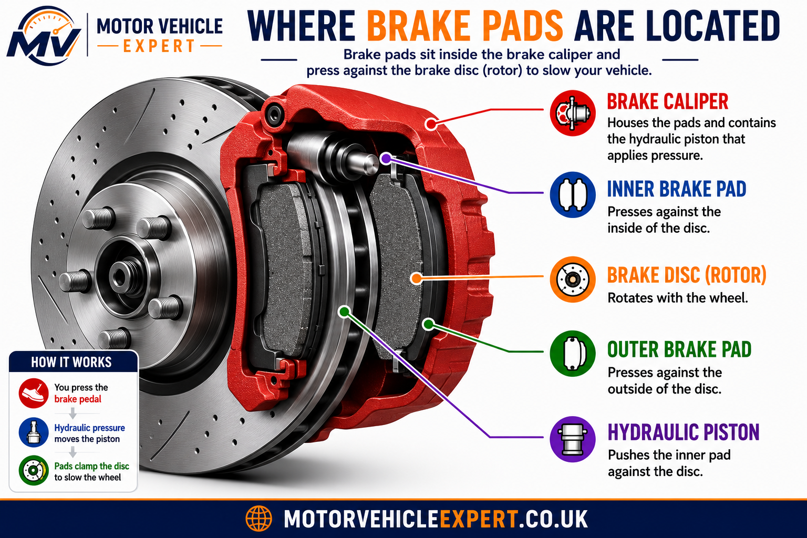
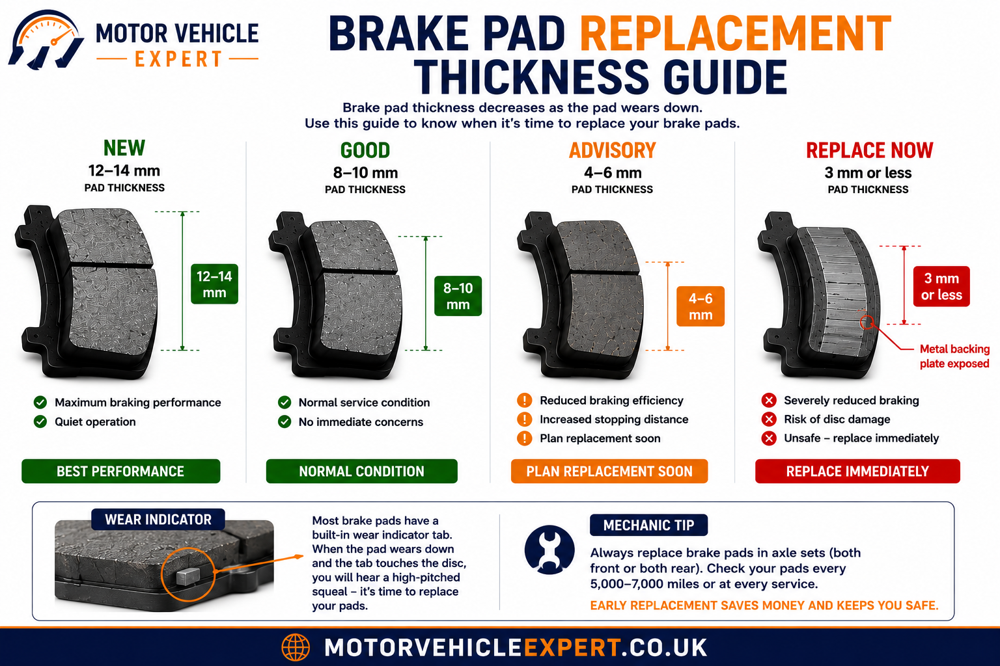
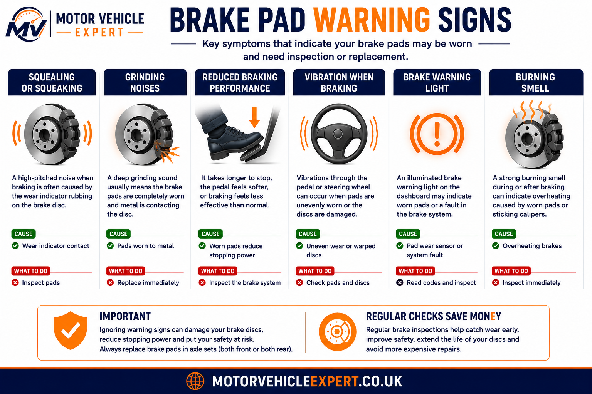
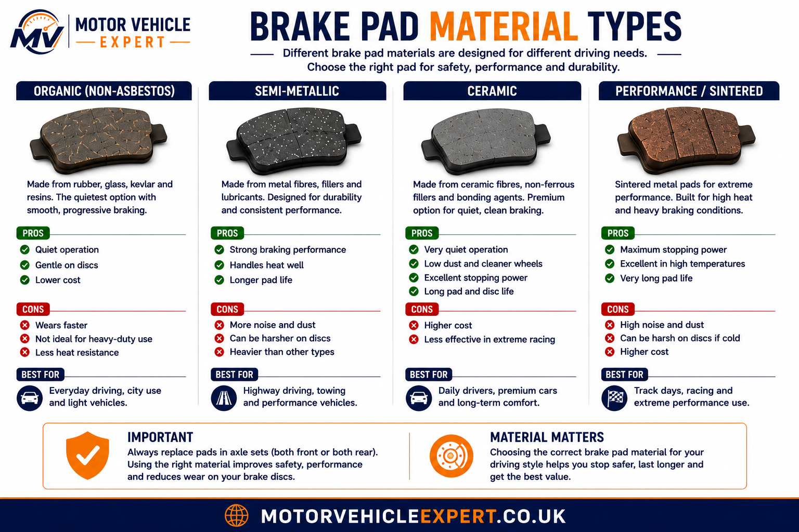

What are brake pads?
Brake pads are friction components fitted inside the brake caliper. When you press the brake pedal, hydraulic pressure pushes the pads against the rotating brake disc. This friction slows the wheel and converts vehicle movement into heat.
What do they do?
Brake pads create the friction needed to slow the brake disc and wheel.
When do they wear out?
Pads gradually wear thinner and usually need replacement before reaching 3mm.
What is urgent?
Grinding, brake warning lights, vibration or longer stopping distances need prompt inspection.
Brake pads are cheaper to replace before they wear down completely. Once the metal backing plate contacts the brake disc, the repair usually becomes pads and discs together.
Where are brake pads located?
Brake pads sit inside the brake caliper on either side of the brake disc. Most disc brake systems use an inner pad and an outer pad. The caliper piston pushes the inner pad first, while the caliper body or opposing pistons apply pressure to the outer pad.

Inner pads can wear faster than outer pads, especially when caliper slide pins or pistons begin to stick.
How brake pads work
Brake pads work by pressing friction material against the metal brake disc. The caliper creates clamping force, the pads grip the disc surface and the vehicle slows down. Good brake pads must handle heat, pressure, dust, moisture and repeated braking without breaking apart or fading too quickly.
1. Pedal pressed
The driver presses the brake pedal and hydraulic pressure is created.
2. Caliper moves
Pressure moves the caliper piston and pushes the pad towards the disc.
3. Pads clamp
Inner and outer pads press against the brake disc.
4. Wheel slows
Friction converts movement into heat and slows the wheel.
Brake pads should always be replaced in axle sets, meaning both front wheels or both rear wheels together. Replacing one side only can create braking imbalance.
When should brake pads be replaced?
Brake pads should be replaced before the friction material becomes too thin. Many garages recommend replacement once pads reach around 3mm, although exact limits can vary by vehicle, pad design and manufacturer guidance. Waiting until the pad reaches the metal backing plate can damage the brake disc and increase repair costs.
New Pads
12–14mmFull friction material thickness gives strong braking performance, quiet operation and good heat control.
Good Condition
8–10mmPads in this range are normally serviceable and should continue to perform well if wear is even.
Advisory Range
4–6mmPads are not usually unsafe at this point, but replacement should be planned before they become too thin.
Replace Now
3mm or lessPads at this thickness have limited service life remaining and may quickly progress to metal-on-metal contact.

The visible outer pad does not always tell the full story. Inner pads can wear faster, so a proper inspection should check both sides of the disc.
Grinding usually means the brake pad friction material has worn away and the metal backing plate is contacting the brake disc. At that stage, the repair normally becomes more expensive because the disc may also need replacement.
Signs your brake pads need attention
Brake pads often give early warning signs before they become dangerous. Some symptoms are caused by normal surface corrosion or dust, but persistent noise, vibration, pulling or warning lights should always be checked. Ignoring pad wear can damage discs, increase stopping distance and create MOT problems.
Squealing Noise
A high-pitched squeal may be caused by a wear indicator touching the disc, glazed pads, dust, missing shims or poor-quality pad material.
Grinding Noise
Grinding is more serious and often means the pad material has worn away completely. Stop driving and arrange inspection.
Brake Dust Build-Up
Heavy dust can be normal with some pad materials, but excessive or uneven dust may indicate low-quality pads or sticking calipers.
Vibration When Braking
Vibration can be caused by uneven pad deposits, worn pads, disc thickness variation or contaminated braking surfaces.
Longer Stopping Distance
If the vehicle needs more distance to stop, pad wear, poor friction material, contaminated fluid or disc faults may be involved.
Brake Warning Light
Some vehicles have pad wear sensors. A brake warning light may also indicate low fluid or a wider brake system fault.

A warning sign does not always mean the pads alone are faulty. Calipers, discs, brake fluid and sensors may also need inspection.
Brake pad material types explained
Brake pads are made from different friction materials depending on the vehicle, driving style and performance requirements. The right pad material affects noise, dust, braking feel, heat resistance, disc wear and replacement cost.
Organic Pads
Quiet everyday useOrganic pads are usually quiet and gentle on discs, but they may wear faster and offer less heat resistance.
Semi-Metallic Pads
Strong brakingSemi-metallic pads handle heat well and offer good braking performance, but they can be noisier and create more brake dust.
Ceramic Pads
Low dustCeramic pads are often quieter and cleaner, but they usually cost more and may not be ideal for all vehicles.
Performance Pads
High heat usePerformance or sintered pads are designed for demanding use, but may be noisy, expensive and harsher on brake discs.

The best brake pad is not always the most expensive one. For most UK drivers, the correct pad specification for the vehicle is more important than fitting a performance pad.
How Long Do Brake Pads Last?
Brake pad lifespan varies depending on vehicle weight, driving style, road conditions and the quality of the friction material. Cars used mainly in towns with frequent stop-start traffic usually wear pads much faster than vehicles driven mostly on motorways.
Brake pad life varies depending on where and how you drive. Frequent stop-start traffic, towing and performance driving all increase brake wear compared with steady motorway cruising.
Mostly Motorway
50,000–70,000 milesBrake Disc Wear: Low
Inspect brake pads during every scheduled service.
Mixed UK Driving
30,000–50,000 milesBrake Disc Wear: Normal
Inspect annually or every service.
Urban Driving
20,000–35,000 milesBrake Disc Wear: Medium
Inspect every 10,000 miles due to frequent braking.
Towing & Heavy Loads
15,000–30,000 milesBrake Disc Wear: High
Check the braking system frequently, especially before long journeys.
Performance Driving
10,000–25,000 milesBrake Disc Wear: Very High
Inspect pads and discs after demanding driving or track use.
Brake pads rarely wear evenly. The inner brake pads usually wear faster than the outer pads because they are harder to see during a quick visual inspection. Always inspect both pads on each wheel rather than judging wear from the outside alone. If uneven wear is found, have the caliper, slide pins and piston checked before fitting new pads.
What Causes Brake Pads To Wear Faster?
Brake pad life depends on much more than mileage. Driving habits, vehicle weight and brake condition all affect how quickly the friction material wears away.
Heavy Braking
Repeated harsh braking creates more heat and rapidly wears friction material.
Town Driving
Stop-start traffic requires hundreds of additional brake applications compared with motorway driving.
Towing
Extra vehicle weight increases braking force and accelerates both pad and disc wear.
Sticking Calipers
A seized caliper can leave the pads permanently rubbing the disc, causing rapid wear and overheating.
Poor Quality Pads
Cheap pads often wear more quickly, create more brake dust and may increase stopping distances.
Driving Style
Smooth anticipation and engine braking can significantly increase brake pad lifespan.
Brake Pad Bedding-In (Breaking In New Brake Pads)
New brake pads do not deliver maximum braking performance immediately after installation. The friction material must gradually bed into the surface of the brake disc so both components create an even contact area. This process is known as bedding-in or breaking in new brake pads. Following the correct procedure improves braking performance, reduces noise and vibration, extends brake component life and helps prevent uneven pad deposits on the brake discs.
During the first few miles, the friction material transfers a thin, even layer onto the brake disc. This transfer layer allows the pads and discs to work together efficiently. Heavy braking before bedding-in is complete can create hot spots, glazing or uneven deposits that may lead to vibration, squealing and reduced braking performance.
Step 1
Drive NormallyBegin with gentle everyday driving. Avoid aggressive acceleration or heavy braking for the first few miles after installation.
Step 2
Progressive BrakingPerform several gentle to moderate stops from normal road speeds, allowing the brakes to cool slightly between each application.
Step 3
Cooling PeriodContinue driving without prolonged braking whenever possible. Cooling the brakes between stops helps create an even friction layer.
Common Bedding-In Mistakes
- ✕Emergency braking immediately after fitting new pads.
- ✕Holding the brake pedal firmly after a hard stop.
- ✕Repeated heavy braking without allowing cooling time.
- ✕Ignoring unusual grinding or vibration after installation.
When Full Performance Is Reached
Most standard road brake pads reach their normal operating performance after approximately 150–300 miles (240–480 km), although some premium or performance compounds may require a longer bedding-in period. Always follow the brake pad manufacturer's recommendations where available.
Unless it is necessary for safety, avoid heavy emergency braking during the initial bedding-in period. Excessive heat generated before the friction surfaces have fully mated can reduce braking efficiency, shorten pad life and increase the risk of brake noise or vibration later.
After fitting new brake pads, listen for unusual noises and check that the vehicle brakes smoothly in a straight line. A slight smell or light noise during the first few journeys is often normal while the pads bed in, but persistent grinding, severe vibration or pulling to one side should be investigated immediately.
Can Worn Brake Pads Fail an MOT?
Yes. Brake pads can contribute to an MOT failure if they are excessively worn, insecure, contaminated, missing, incorrectly fitted or causing poor braking performance. The MOT test looks at overall braking safety, not just whether the pads are present.
Excessively Worn Pads
MOT Result: FailPads worn close to the backing plate can reduce braking performance and may damage the brake discs.
Contaminated Pads
MOT Result: FailOil, grease or brake fluid contamination can reduce friction and cause dangerous brake imbalance.
Uneven Pad Wear
MOT Result: Advisory / FailUneven wear may indicate seized slide pins, sticking pistons or poor caliper movement.
Grinding Brakes
MOT Result: Fail likelyGrinding usually means the pad material has worn away and the metal backing plate is contacting the disc.
Brake Imbalance
MOT Result: FailBrake imbalance can be caused by worn pads, seized calipers, contaminated friction material or hydraulic faults.
Warning Lights
MOT Result: May failA brake pad wear warning light or brake system warning light should be checked before the MOT test.
Do not wait until the MOT test to discover brake pad wear. If pads are close to the limit, replacing them before the test is usually cheaper than failing, retesting and potentially needing brake discs as well.
Typical UK Brake Pad Replacement Costs
Brake pad replacement costs depend on vehicle size, axle position, labour rates, pad quality and whether the brake discs also need replacing. Pads are normally replaced in axle pairs, meaning both front wheels or both rear wheels together.
Front Brake Pads
£100–£220Front pads usually wear faster because they provide most of the braking force.
Rear Brake Pads
£90–£200Rear pads often last longer but can wear quickly if the caliper or handbrake mechanism sticks.
Pads and Discs
£220–£500+If pads have worn too low or discs are scored, replacement together is often the correct repair.
Premium Vehicles
£250–£700+Larger cars, SUVs and performance models often use bigger pads and higher-cost friction materials.
Pad Wear Sensor
£20–£80Some vehicles need a new wear sensor when brake pads are replaced.
Caliper Service
£60–£180+Slide pins, carriers or pistons may need cleaning or repair if uneven pad wear is found.
If the garage recommends brake pads and discs together, ask whether the discs are below minimum thickness, heavily scored, corroded or damaged by metal-on-metal contact. This helps you understand whether the extra cost is necessary.
What a Mechanic Checks When Replacing Brake Pads
A proper brake pad replacement is more than removing old pads and fitting new ones. A technician should inspect the full wheel-end braking assembly to make sure the new pads can bed in correctly and the braking system remains safe.
Pad Thickness
Both inner and outer pads should be measured because uneven wear often points to caliper or slide pin problems.
Brake Disc Condition
Discs should be checked for scoring, corrosion, cracks, heat damage, lip formation and minimum thickness.
Caliper Movement
The caliper should slide freely and the piston should retract correctly. Sticking calipers cause rapid pad wear.
Pad Hardware
Anti-rattle clips, shims, carriers and retaining pins should be cleaned, checked and refitted correctly.
Brake Fluid Level
Fluid level may rise when pistons are pushed back, so the reservoir must be checked during replacement.
Road Test
A short road test confirms pedal feel, brake balance, noise levels and correct bedding-in behaviour.
If new brake pads are fitted to badly scored or heavily corroded discs, the pads may not bed in properly. This can cause noise, vibration and reduced braking performance.
Checking Brake Pads Before Buying a Used Car
Brake pads are normal wear items, but their condition can reveal how well a car has been maintained. Worn pads alone are usually not a reason to walk away, but grinding, warning lights, uneven wear or poor brake feel should affect your offer.
Walk Away If...
- ✓Brakes grind during the test drive.
- ✓The brake warning light stays on.
- ✓The pedal feels soft or sinks.
- ✓The car pulls heavily when braking.
Negotiate If...
- ✓Brake pads are close to replacement.
- ✓Brake discs are scored or corroded.
- ✓The MOT history shows brake advisories.
- ✓Brake fluid is overdue.
Good Signs
- ✓Even pad wear across both sides.
- ✓Smooth, quiet braking.
- ✓No brake warning lights.
- ✓Recent brake service invoice.
Brake Pads FAQs
These are some of the most common questions UK drivers ask about brake pads, brake wear, replacement intervals and MOT inspections.
How often should brake pads be replaced?
There is no fixed replacement interval because brake pad life depends on driving style, vehicle weight, traffic conditions and brake system condition. Most front brake pads last between 25,000 and 60,000 miles, while rear pads often last longer.
Can I replace brake pads without replacing the brake discs?
Yes, provided the brake discs remain above the manufacturer's minimum thickness and show no significant scoring, cracking, excessive corrosion or heat damage. If the discs are badly worn, replacing pads and discs together is normally recommended.
What happens if brake pads wear completely out?
Once the friction material wears away, the metal backing plate contacts the brake disc. This produces grinding noises, severely reduces braking performance and usually damages the brake disc, increasing repair costs.
Can worn brake pads fail an MOT?
Yes. Excessively worn, insecure or contaminated brake pads can contribute to an MOT failure. Brake imbalance, seized calipers and illuminated brake warning lights may also result in failure depending on the defect.
Why do my new brake pads squeal?
New brake pads sometimes squeal while bedding in. Persistent noise may indicate glazing, contaminated pads, poor-quality friction material, damaged discs or incorrect installation.
Should brake pads always be replaced in pairs?
Yes. Brake pads should always be replaced across the same axle. Replacing only one side can cause uneven braking performance and increased brake imbalance.
Explore the Complete Braking System Knowledge Centre
Brake pads are only one part of the complete braking system. Continue exploring our detailed UK guides covering brake components, hydraulic systems, electronic braking systems, MOT inspections, repair costs and driver safety checks. Together these articles form the Motor Vehicle Expert Braking System Knowledge Centre.